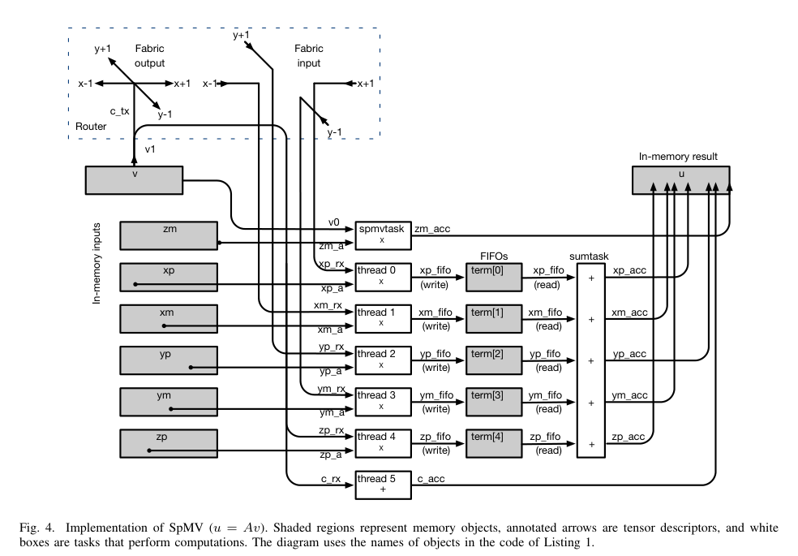
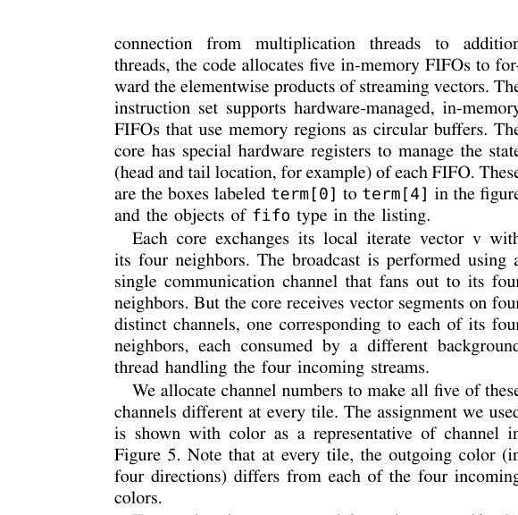
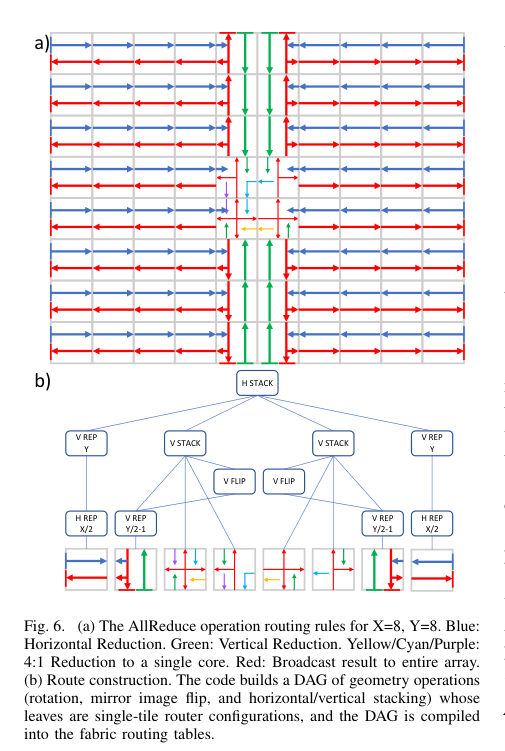
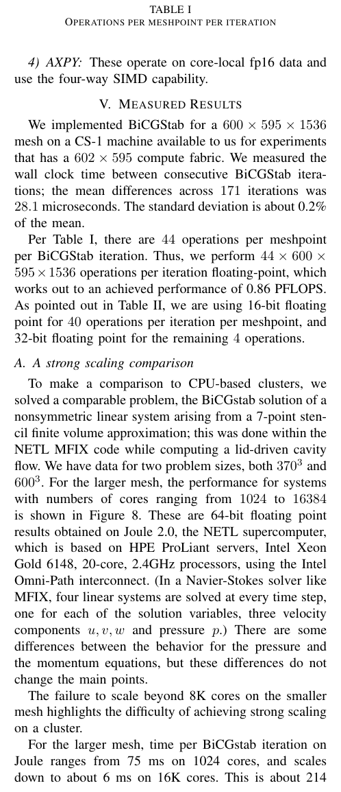
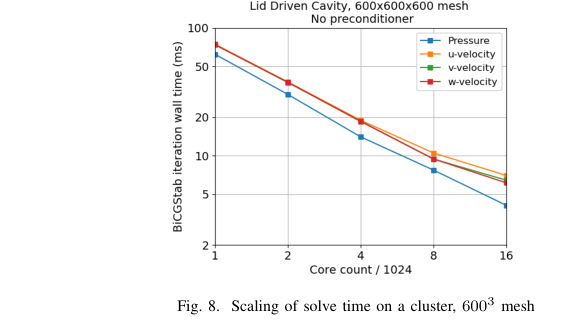
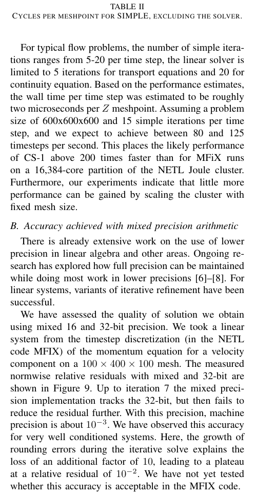

← Daily Papers
本报告由大模型自动生成，可能存在理解、归纳或数据转述错误；请以原论文为准。
Fast Stencil-Code Computation on a Wafer-Scale Processor Kamil Rocki, Dirk Van Essendelft, Ilya Sharapov, Robert Schreiber, Michael Morrison, Vladimir Kibardin, Andrey Portnoy, Jean François Dietiker, Madhava Syamlal, Michael James · SC20: International Conference for High Performance Computing, Networking, Storage and Analysis · 2020 · 原文 · PDF
报告模型：gemini-3.1-pro-preview / high
这是一份关于《Fast Stencil-Code Computation on a Wafer-Scale Processor》（在晶圆级处理器上的快速模板代码计算）的详细解读。本文由 Cerebras Systems 和美国国家能源技术实验室（NETL）的学者于 2020 年发表。文章主要探讨了如何利用一种全新的晶圆级硬件架构，来突破传统 CPU/GPU 在求解偏微分方程（PDE）时遇到的“内存墙”和“通信墙”瓶颈。
以下是按论文逻辑结构展开的详细分析。
一、 研究背景与引入 (Introduction)
问题背景：内存带宽与通信延迟的瓶颈
在高性能计算（HPC）领域，计算流体力学（CFD）等物理仿真通常依赖于通过有限差分、有限元或有限体积法来求解偏微分方程。这些方法会生成大型稀疏线性方程组。文章指出，这类求解过程的核心特征是**算术强度（Arithmetic Intensity）**极低。算术强度被定义为“对每个从内存加载的数据所执行的浮点运算次数”。由于求解器需要反复遍历巨大的三维网格，每个数据通常只参与很少的加乘运算，因此计算设备的性能极大地受限于内存带宽（数据在缓存和内存之间的移动速度）和网络带宽（数据在不同计算节点之间的移动速度）。
现有技术的局限与本文方案
作者指出，在传统的 CPU 和 GPU 集群中，计算能力（每秒浮点运算次数，FLOPS）的增长速度远超内存和互连网络带宽的增长。这就导致了一个巨大的鸿沟：即使处理器的峰值算力很高，也因为“等数据”而无法发挥。例如，在高性能共轭梯度（HPCG）基准测试中，顶级超算的实际利用率通常只有峰值浮点性能的 0.5% 到 3.1%。
为了解决这个问题，本文引入了 Cerebras Systems 开发的 CS-1 晶圆级系统 作为研究对象。与传统将硅晶圆切割成小块芯片（Die）封装的做法不同，CS-1 将整个晶圆作为一个完整的处理器。这种物理层面的连续性提供了一个极其庞大的片上分布式存储与计算系统。本文的核心大意就是：展示如何将一个典型的三维 7 点有限差分模板（Stencil）及其相关的双共轭梯度稳定（BiCGStab）迭代求解算法，高效地映射到这块晶圆上，并实现前所未有的计算性能。
二、 系统全貌：CS-1 晶圆级引擎 (The CS-1 Wafer Scale Engine)
在介绍具体算法实现前，必须先建立对 CS-1 硬件体系结构的全面理解。作者在此明确了系统的物理和逻辑层级：
晶圆（Wafer）与晶粒（Die）： CS-1 的核心是一整块面积为 462 平方厘米的硅晶圆（WSE）。【背景补充：在标准半导体制造中，晶圆会被切割成几百个独立的晶粒（Die）然后分别封装。】CS-1 包含 84 个相同的 Die，排布为 7 × 12 瓦片（Tile）： 每个 Die 被进一步细分为数千个网格状的 Tile。Tile 是该架构中不断重复的基本构建单元 。核心（Core）与存储（Memory）： 在每一个 Tile 内部，包含一个处理核心、它专属的静态随机存取存储器（SRAM），以及一个负责通信的路由器（Router）。整个晶圆包含约 38 万个这样的独立核心。
硬件强制约束与特性：
无共享内存（Distributed Memory）： 这是硬件的强制约束。系统内没有全局内存，每个核心只能访问自己专属的 48 KB 极速本地 SRAM。总容量达 18 GB。其读写延迟仅为 1 个时钟周期。指令集与计算单元（ISA & FMAC）： 核心支持 16 位整数、16 位浮点（IEEE fp16）和 32 位浮点（IEEE fp32）。核心执行单元是融合乘加器（FMAC，计算乘法后直接相加而不进行中间舍入）。由于硬件位宽限制，纯 32 位计算每周期执行 1 次 FMAC；而在混合精度（16位乘、32位加）下，通过 4 通道单指令多数据流（SIMD-4，即一条指令同时处理四个数据），每周期可执行 2 次 FMAC。片上网络结构（2D Mesh Fabric）： 每个 Tile 的路由器有 5 个双向链路：连接北、南、东、西 4 个相邻的 Tile，以及连接本地的 Core。网络是单周期延迟的，注入带宽极高。数据流驱动（Data-Triggered Tasks）： 这是一个极其特殊的设计。核心执行的软件没有传统的操作系统来进行上下文切换。相反，硬件路由器直接将网络上到达的数据放入本地内存或寄存器，并由此触发后台线程。
三、 求解算法：BiCGStab 方法 (The BiCGStab Method)
文章选用的具体工作负载是由偏微分方程离散化产生的线性方程组，其数学形式为：
A x = b
这里，矩阵 A x b
作者选用了**双共轭梯度稳定法（BiCGStab）**来迭代求解该方程（见原文 Algorithm 1）。对于本文的系统映射，读者需要了解该算法每一轮迭代主要包含三种低算术强度的核心数学操作：
SpMV（稀疏矩阵-向量乘法）： 计算 y = A x y AXPY（向量加法缩放）： 计算 y = y + α x α x , y 内积（Inner Product / Dot Product）： 计算两向量的标量积（例如 ( r 0 , r i ) 0 i i i 0 , 1 , 2 , … r 0 r i
四、 架构到硬件的映射与实现 (Mapping BiCGStab to the CS-1)
这是本文最核心的技术贡献部分。作者需要决定如何将上述数学操作和三维网格数据映射到二维的晶圆硬件上。这里充满了软件设计选择对硬件约束的妥协与利用。
1. 区域分解与数据分布策略 (Domain Decomposition)
假设要仿真的三维物理空间网格大小为 X × Y × Z X , Y , Z
软件设计选择： 作者将 X Y Z 为何这样设计（约束权衡）： 因为 A A x , p , r Z = 1536 Z
2. SpMV 在 3D 映射下的微架构实现 (Microarchitecture of SpMV)
为了让 SpMV 高效执行，作者编写了专用的底层代码（如原文 Listing 1 所示）。这里涉及到软件如何调度 CS-1 的微架构（见原文图 4 数据流图）：

Figure 4 · 原文 PDF 第 6 页
张量描述符（Tensor Descriptors & DSR）： 概念：DSR（数据结构寄存器）是 CS-1 硬件特有的寄存器，用于在硬件层面自动生成多维数组（张量）的内存地址步长。软件定义了针对内存的 tensor 描述符和针对片上网络的 fabric 描述符。作用：它消除了传统 CPU 中使用 for 循环带来的指令开销。数据流设计： 在计算 Z z x , y
四向邻居获取： 软件启动一个广播指令，将自己的局部向量向四周发送。同时启动四个后台线程，监听由硬件路由器传入的四个方向的网络数据通道。自环回（Loop-back）： 作者做了一个精妙的设计，将核心自身的向量数据发送到路由器的发送端口，再马上路由回接收端口（图中标记为 c_tx 和 c_rx）。为什么这么做？ 作者指出这看似多此一举，实际上是为了节省 SRAM 的读取带宽，通过网络路由器来充当临时的延迟流水线，以完成 Z
硬件 FIFO 与异步归约： 当上述后台线程把收到的数据与局部矩阵系数相乘后，结果不会直接写回主内存，而是推入**硬件 FIFO（先进先出队列缓冲区）**中。一旦 FIFO 有数据，CS-1 的硬件任务调度器会自动触发（activate）一个总和任务（sumtask），将其累加到最终结果向量中。这种依靠数据到达直接驱动计算（Data-triggered）的方式，彻底掩盖了传统架构中极大的同步开销。
3. 网络路由配置 (Tessellation routing pattern)
在 EDA（电子设计自动化）与架构设计的交叉点上，CS-1 的片上网络具有一种特性：路由是在离线编译阶段静态配置的 。
颜色通道分配（图 5）： 核心每次发送数据向四周广播，但接收时必须区分数据来自哪个邻居。作者在编译时为每个核心分配了不同的虚拟通道（用颜色代表）。这意味着数据包的传输路径和优先级在运行前已经固化为有向无环图（DAG）并写入了路由转发表。这种软硬协同设计去除了路由器内部用于动态寻址的逻辑判断延迟，使得单跳延迟可稳定在 1 纳秒级。 
Figure 5 · 原文 PDF 第 6 页
4. 全局归约操作 (AllReduce for Inner Products)
由于内积需要全晶圆求和，这就涉及到长距离通信。
实现机制： 作者设计了一种静态路由规则（见原文图 6）。第一阶段（水平归约）：网格同一行的核心将局部乘积向中心列发送并沿途累加；第二阶段（垂直归约）：中心两列将数据向正中间的核心发送并最终汇总到一个单点；第三阶段（广播）：将总和按原路逆向广播回所有 38 万个核心。
Figure 6 · 原文 PDF 第 8 页 为什么能做到极速： 因为单跳延迟极低，完成一次全晶圆级别的标量 AllReduce 仅需约 1.5 微秒。作为对比，传统 MPI 集群中由于网卡、交换机和软件协议栈的存在，这个时间通常在几百微秒以上。
五、 实验评估 (Measured Results)
作者在包含 602 × 595 600 × 595 × 1536
性能结果： 测量得出 BiCGStab 两次迭代之间的墙上时钟时间（Wall clock time）平均为 28.1 微秒。根据公式推算（表 I 显示每个网格点每次迭代需 44 次浮点运算），系统实际达到的计算吞吐量为 0.86 PFLOPS（千万亿次/秒） 。
Table I · 原文 PDF 第 8 页 强扩展性对比实验（Strong Scaling Comparison）：
对照组： NETL 的 Joule 2.0 超算集群（基于 Intel Xeon 处理器，Omni-Path 互连）。实验现象（图 8）： 在求解类似但稍小尺寸的 3D 网格时，Joule 集群使用 1024 个核心耗时 75 毫秒；当扩展到 16384 个核心时，耗时降至约 6 毫秒，随后由于通信开销增加，性能难以继续提升（强扩展性失效）。
Figure 8 · 原文 PDF 第 9 页 结论推导： CS-1 的 28.1 微秒迭代时间，比 16K 个 CPU 核心构成的集群快了约 214 倍。作者分析指出，巨大的差异主要源自于内存技术 。CPU 复杂的 L1/L2/L3 共享缓存体系在面对数据重用率极低的模板计算时，无法提供足够的端到端端口带宽。而 CS-1 的无共享、纯分布式 SRAM 设计直接解决了这一痛点。重要局限（精度差异）： 作者坦诚，这个 214 倍的对比并非完全对等。CPU 运行的是 64 位双精度浮点数（fp64），而 CS-1 运行的是 16位/32位混合精度（fp16 乘 / fp32 加）。
六、 扩展应用与精度局限 (CFD on the CS-1 & Accuracy)
为了证明这项研究具有实际工业价值，而不仅仅是跑个线性代数 Benchmark，作者在这一节将其推导到实际的 CFD 代码（MFIX）上。
计算重叠设计： 求解不可压 Navier-Stokes 方程不仅仅是 BiCGStab，还需要构建动量和连续性方程（Algorithm 2）。作者估算了这些构建过程（加减乘除和平方根）的指令周期（表 II）。得出的结论是，由于系统架构的并行性，构建矩阵的时间可以和线形求解的时间重叠，预估处理一个时间步每个 Z Z 
Table II · 原文 PDF 第 10 页 混合精度的局限性验证（图 9）： 这是一个极其关键的发现。作者测量了使用混合精度求解动量方程时的相对残差范数（Relative norm of residual）。图 9 表明，混合精度算法在迭代初期与 32 位全精度行为一致，但当残差下降到 10 − 2 平台期（Plateaus） ，无法进一步收敛。
原因剖析： 由于 fp16 的机器精度（表示 1 的下一个浮点数与 1 的差值）仅为 10 − 3
七、 讨论与结论主线 (Discussion and Open Questions)
内存容量的权衡： 作者在最后讨论了 CS-1 方案的最大局限性：18 GB 的内存总量对于超算领域来说确实很小，无法装下极其庞大的全尺寸模型。但作者指出，在很多需要“有限体积内极快响应”的特定场景，这个缺点是可以接受的。例如：
直升机降落在航母甲板时的实时带环空气动力学控制（需要百万级网格，且必须实时出结果）。
风力涡轮机设计的自动形状寻优（需要几百到上千次重复仿真）。
为生成神经网络训练数据提供廉价的低延迟仿真器。
全文逻辑主线总结：
本文最初面临的问题是：传统的 CPU/GPU 的存储层级和总线架构严重阻碍了 PDE 求解器这种受限于内存带宽的低算术强度应用。
为了解决这个问题，作者探索了一条极端路线：采用整个硅晶圆作为单一处理器（CS-1），彻底消除片外通信和缓存未命中惩罚。
在实现过程中，最关键的设计是将三维物理模型按 2D+1D 的方式映射到二维网络与一维本地缓存中，并通过硬件静态路由和数据触发机制实现了无等待的计算。
最终，系统在百万级网格的 BiCGStab 求解中取得了比传统万核集群快两个数量级的性能，解决了特定规模下流体计算无法达到实时性的难题。
然而，这项研究的最关键局限 在于其硬件强制依赖的 16位/32位混合精度所带来的舍入误差放大问题，导致求解精度被锁定在 10 − 2